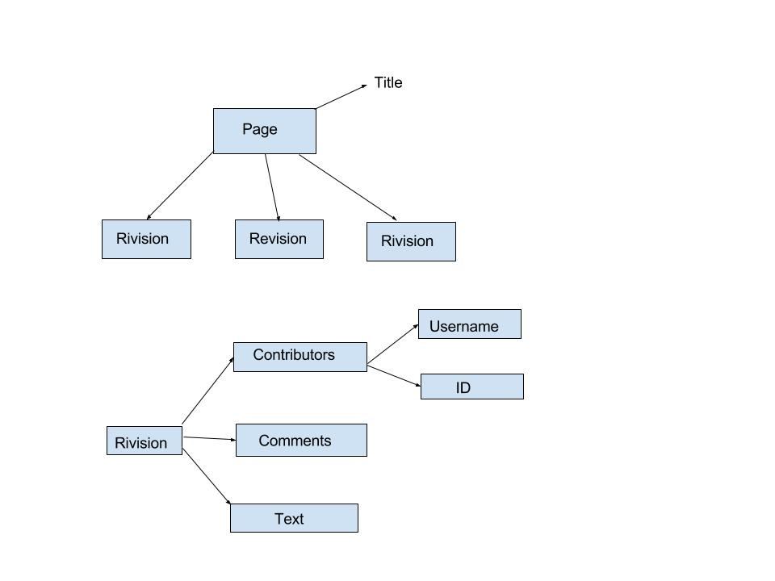
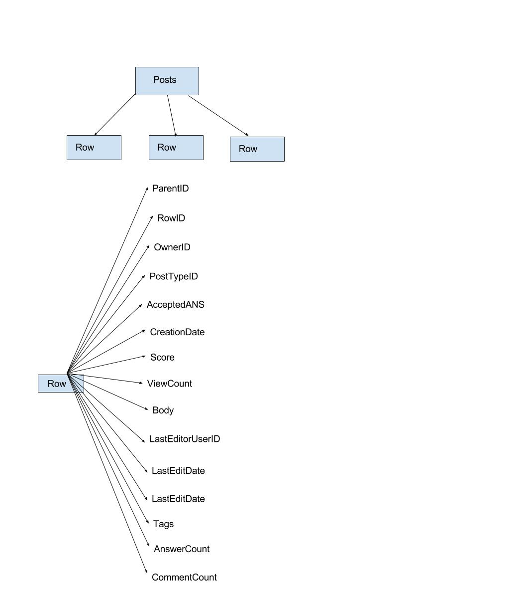
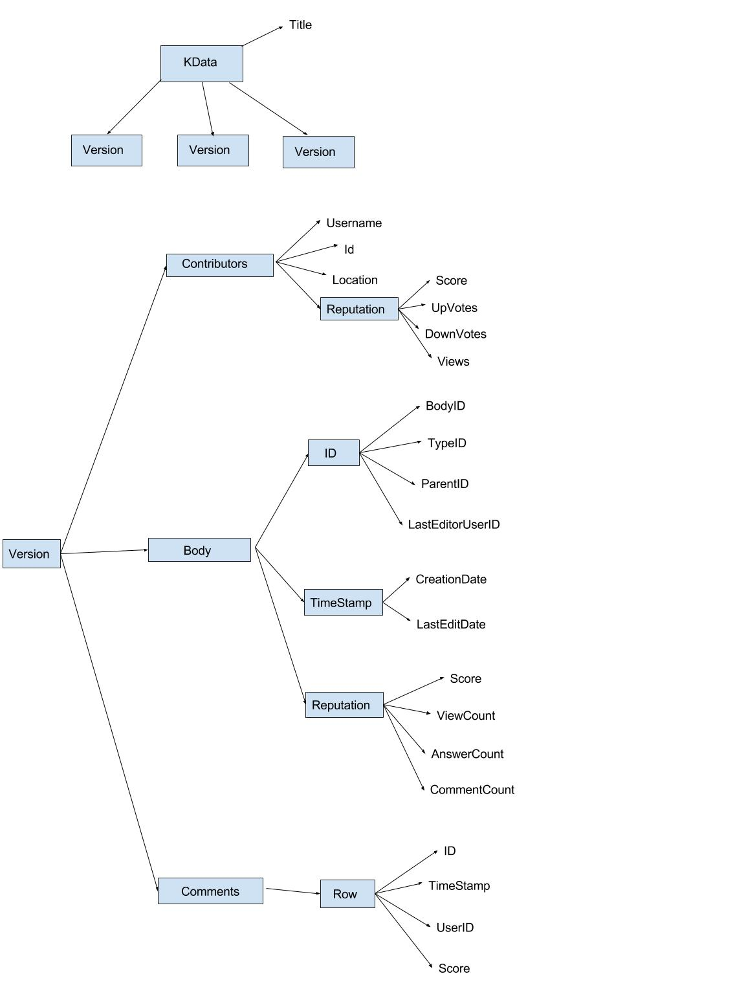

What is KML Project?
KML stands for Knowledge Markup Language, a standard format for storing the data of all the Knowledge Building Portals. Knowledge Building portals like Wikipedia, Stack Exchange, GitHub, e.t.c provides their data dump in their own formats. We are trying to propose a new standard format for all these types of portals such that the analysis is easy. This project is being carried out under the supervision of
Dr. Sudarshan Iyengar.
Need for KML
All these Knowledge Building portals provides their data dumps in their own format. For example, Wikipedia provides its data in a XML format with their own schema definition. Similarly Stack Exchange provides its data dump in a XML format with different schema definition. The KML will be a new standard format for these kind of Knowledge Building portals with a standard schema definition. The idea is to make KML flexible enough such that it can store the data of any kind of Knowledge Building portals.
Wikipedia Schema
Wikipedia is the largest and most popular free online encyclopedia with the aim to allow anyone to edit articles. The Wikimedia Foundation (WMF) releases data dumps of Wikipedia on a regular basis in the form of XML. XML dumps since 2010 are in the wrapper format described using this
Schema. The Wikipedia schema is described in the form of diagram below

Stack Exchange Data
Stack Exchange is a network of question-and-answer websites on topics in varied fields, each site covering a specific topic, where questions, answers, and users are subject to a reputation award process. Stack Exchange provides the data of each site in XML format. Each site is formatted as a saperate archive consisting of XML files. Each site archive includes Posts, Users, Votes, Comments, PostHistory and PostLinks.

The above diagram explains the schema of post.xml of
Astronomy StackExchange. The root element is the page for the schema. Each page contains many rows with unique identity number associated with it. The row element has an attribute PostTypeId which represents whether it is a question or answer. All other attributes are self explanatory.
KML ADT (Basic Version)
The is to have a format which is capable and flexible enough to store the data of all types of Knowledge Building Portals. As a first version, we propose an ADT similar to Wikipedia. The root tag will be the "KData" having miltiple topics as its elements. The overall schema is as follows.
